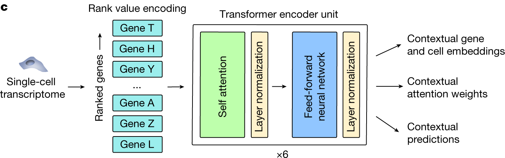
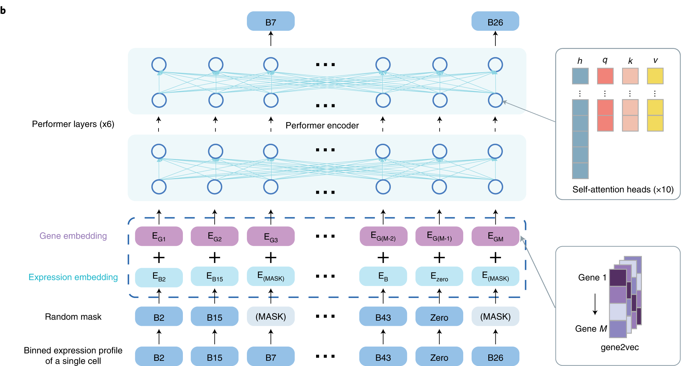
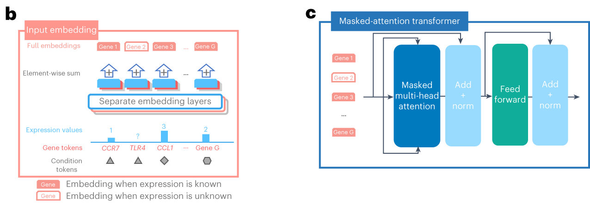
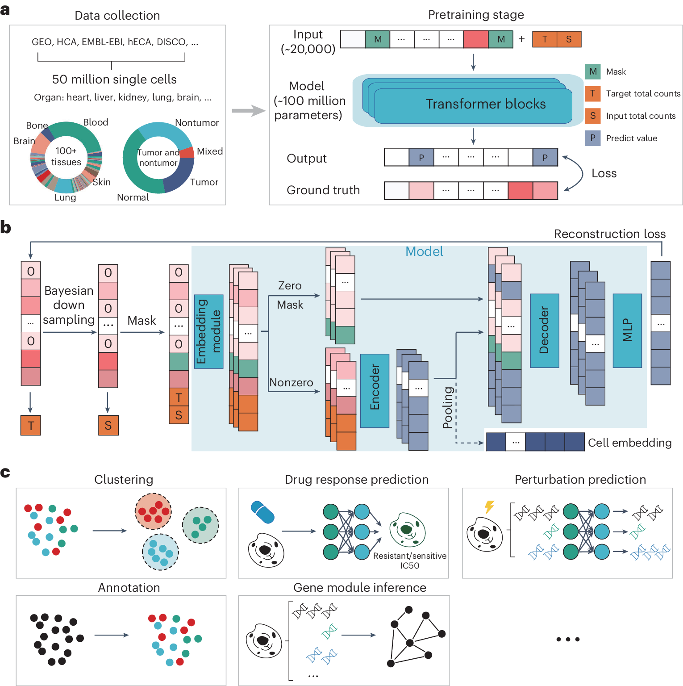
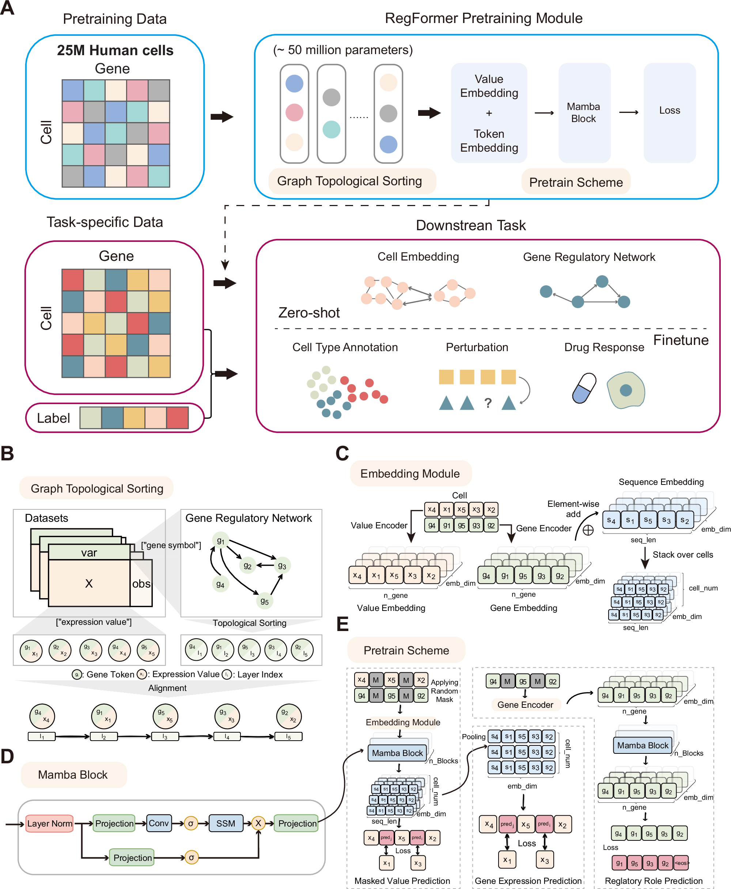
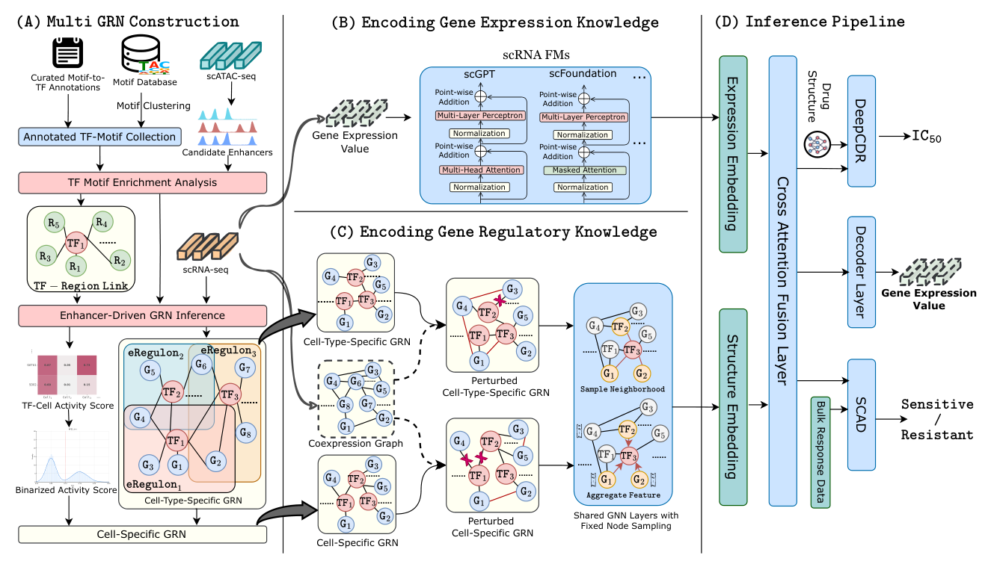

NOTES / SEPTEMBER 2026
单细胞大模型的基因序列处理方法
基因选择与身份表示、基因排列与位置机制，以及表达量编码。
单细胞表达谱本来是“基因—表达量”的矩阵，并不像一句话那样自带词序。对一个细胞而言，每个基因对应一个测得的表达值；把某个基因放在另一个基因前面，通常只是数据存储或预处理时的安排，并不天然表示它在生物学上更上游。因此，将表达谱组织为序列模型的输入时，需要分别明确：基因选择与身份表示、基因排列与位置机制、表达量编码；这些决定不能混为一谈。
基因选择与身份表示决定了模型的视野。可以使用预先定义的基因集合，也可以只保留高变基因、特定通路中的基因，或者每个细胞中检测到表达的基因；选中的表达值还需要通过基因 ID 或固定位置对应的身份向量，让模型辨认所属基因。不同选择会改变输入长度，也会影响低表达基因和未检测到的基因是否被保留。例如，Geneformer 只对词表内的非零表达基因进行排序，并在超长时截断，因此一个基因未出现在序列中，并不必然意味着它在生物学上不表达。即使表达矩阵中的测量值为零，也可能与转录本捕获效率、测序深度等限制有关；而单次测量只是采样时刻的快照，不能代表该基因在其他时刻的表达状态。
排列规则决定模型视野中基因的先后。可以按照固定的基因索引排列（如 scFoundation），也可以按照表达值的高低排列（如 Geneformer），或按先验调控图的拓扑序排列（如 RegFormer）。固定参考索引用于保持基因身份与表达值的对应，但筛选或压紧条目后，同一基因在实际输入序列中的位置仍可能变化；按表达值排序时，同一位置表示的是表达排名，对应的基因则可能随细胞而变化。表达排名不等于调控层级，“表达更高”并不意味着“调控更上游”。 此外，排出顺序并不意味着模型一定把先后关系作为额外信息：模型可以通过显式位置编码利用顺序，也可以像 Mamba 那样，通过沿序列递推的计算方式利用顺序。
表达编码决定表达信息进入模型的形式。表达量可以经过归一化和对数变换后，以连续数值映射成向量；也可以被划分到若干区间，用离散的分箱编号表示。比如，把一组表达值映射为“低、中、高”或更细的等级，改变的是表达数值的表示粒度，并不自动改变基因的排列。一个序列完全可以按固定基因顺序组织，同时使用分箱后的表达值；也可以先按表达量排序，再为每个基因附加连续的表达量编码。此外，调控图也可以通过注意力或图表示提供关系信息，而不改变基因排列；使用图先验不等于按图排序。
本文比较 Geneformer、scBERT、scGPT、scFoundation 和 RegFormer，并将 GRNFormer 作为图先验注入方式的补充对照。它们不一定采用相同规模或同类骨干网络；这里关注的是基因序列的构造，不是性能排名。
一、方法总览
| 模型与核对范围 | 输入基因的选择 | 基因顺序的来源 | 表达量怎样进入模型 | 顺序的含义 |
|---|---|---|---|---|
| Geneformer，原始 V1，并注明 V2 差异 | 词表中的非零表达基因；超长时保留排名靠前者 | 按经细胞测序深度和基因语料库中位数校正后的表达值降序排列 | 原始方案不另附连续表达向量，而以排名承载相对表达信息 | 在该细胞中的相对表达排名，不是调控层级 |
| scBERT，官方公开实现 | 对齐固定参考基因表；缺失项补零 | 固定参考表顺序 | 预处理后表达值截断并转为整数，查表达嵌入表；加 Gene2Vec 向量 | 位置用于匹配基因身份及其 Gene2Vec，不表示上游—下游 |
| scGPT，官方默认 tokenizer 与模型实现 | 默认排除零表达基因；可配置包含；超长时可随机抽样 | 截断前沿输入列顺序；随机抽样后不保证原顺序 | 支持连续值编码、类别编码或缩放；具体预处理可使用表达分箱 | 默认编码路径不使用序号位置编码，基因身份由 gene token 表达 |
| scFoundation，论文所用 xTrimoGene 架构及官方模型 | 固定 19,264 基因参考空间；编码器只读未掩码非零项，解码器恢复全参考空间 | 按固定基因索引对齐，再压紧编码器实际读取的条目 | AutoDiscretization 将数值映成多个可学习 bin 向量的加权和，再结合基因身份嵌入 | 索引用来辨认基因，不是表达排名或调控先后 |
| RegFormer，2025 年预印本 v1 | 按细胞表达基因组织输入，结合先验调控图 | 从先验图去环后取得拓扑序 π | 分别编码基因身份与表达，再交给 Mamba 骨干 | 调控先后约束来自先验图；不是模型从表达中独立发现的因果顺序 |
二、Geneformer：以表达秩构造序列

{kind=link}
基因选择与身份表示
Geneformer 的 tokenizer.py 从词表内选取每个细胞的非零表达基因，按校正后的表达值排序，输出基因 token ID；模型端再通过可学习的嵌入表，将这些 ID 映射为向量。[1][2]
超长时保留排名靠前的基因：V1 最多保留 2,048 个基因 token；V2 的默认总长为 4,096，其中 <CLS> 和 <EOS> 特殊 token 各占一个位置，因此最多容纳 4,094 个基因 token。这里的长度设置分别对应不同模型版本。
基因排列与位置机制
官方 tokenizer.py 先按细胞总 counts 归一化，再除以各基因在预训练语料库中的非零表达中位数，最后按校正值降序排列。这个顺序反映基因相对于其通常表达水平的排名，而不是原始 counts 的大小。同一基因在不同细胞中的位置可以变化，序列中的前后承载的是这种细胞内排名信息。[1][2] 在模型端，官方 V1 配置明确采用绝对位置嵌入；与该配置记录的 Transformers 4.6.0 对应的 BERT 实现会按序号查询可学习的位置向量，并将其加到包含基因 token 嵌入的输入表示上。因此，排名不仅决定基因的排列，也通过位置嵌入显式进入模型；这里的位置代表表达排名，而不是基因组坐标或调控层级。
表达量编码
rank-value encoding 将表达信息压缩进基因的排列，而不是为每个基因另附连续表达数值向量。因此，基因身份与表达排名共同构成输入，但两个校正值相差多少不能仅从序列恢复。对 Geneformer 而言，排列和表达编码是相互关联的：排序本身就是表达信息进入模型的方式之一。
三、scBERT：固定基因对齐，表达嵌入加 Gene2Vec

{kind=link}
基因选择与身份表示
scBERT 官方 preprocess.py 读取 Panglao 参考数据的基因列表，按参考表逐列复制匹配基因的表达，缺失基因保留为零，而不是为每个细胞单独筛选非零基因。官方 finetune.py 的默认基因数为 16,906，读取完整表达行后在末尾追加一个零值，形成 16,907 个位置；这不是 Geneformer 式的表达排名截断。[3][4]
基因身份由预先计算的 Gene2Vec 向量提供，其中包含共表达信息。模型文件 performer_pytorch.py 中的 Gene2VecPositionalEmbedding 加载 16,906 行的 Gene2Vec 文件，并追加一行零向量，与输入末尾的附加位置对应。这里不是把表达值当作基因 ID，而是将表达输入与另一条身份表示分支配对。[5]
基因排列与位置机制
表达列沿固定参考表组织，不按每个细胞的表达量重新排序。模型用序列位置生成索引并查询 Gene2Vec 对应行，因此第 𝑖 个表达值必须属于 Gene2Vec 第 𝑖 行所代表的基因。只打乱表达列而不同时调整身份向量，会造成基因与表达错配。
虽然类名中有“PositionalEmbedding”，这里的位置主要用于检索基因身份，并不是表达排名。在所核对的默认输入路径中，pos_emb 使用 Gene2Vec，layer_pos_emb 返回空值，没有另外加入 Geneformer 那样的可学习序号位置向量。因而不能仅凭类名，就把它理解为给“第几位”赋予独立于基因身份的位置含义。[5]
表达量编码
官方预处理先将每个细胞的总表达量归一化至 10,000，再做以 2 为底的 log(1 + 𝑥) 变换。微调脚本的 bin_num 默认值为 5，结合 CLASS = args.bin_num + 2，将表达值截断到上限 5 后转为整数。对非负表达值而言，这会得到 0–5 的离散编号，整数化会舍去小数部分，而不是四舍五入。[4]
模型通过可学习的表达嵌入表 将这些编号映射为向量，再与对应位置的 Gene2Vec 向量相加，送入 Performer。因此，代码中的 token_emb 在这条路径编码的是表达等级，而不是基因身份；不同细胞中同一基因的 Gene2Vec 表示相同，表达嵌入则可以不同。上述截断与整数化描述限定于这里引用的公开微调实现，不能直接等同于分位数分箱，也不能据此断言论文所有实验都使用相同的分箱设置。[5]
四、scGPT：基因身份与表达配对，不以序号定义基因关系

{kind=link}
基因选择与身份表示
scGPT 官方 gene_tokenizer.py 接收表达矩阵以及与其列对应的基因 ID。include_zero_gene 默认设为 False，因此默认筛出非零表达项，并用相同索引取出基因 ID 与表达值；启用该选项则保留输入中的零表达条目。这一步处理的是上游已经选定的基因列，不意味着所有任务都采用同一基因集合。[6]
模型端 model.py 的 GeneEncoder 将基因 ID 映射为可学习的嵌入，并做层归一化。基因身份由显式 ID 决定，而不是像 scBERT 那样通过固定序列位置查询 Gene2Vec。[7]
启用 CLS 时，tokenizer 在开头插入 <cls> 并为其附上零值。序列超过调用方设置的长度上限时，pad_batch 随机无放回抽取条目，并在启用 CLS 的分支保留首位 CLS；较短序列则补齐基因与表达值的 padding。这里不是 Geneformer 式的“保留表达排名靠前者”，也没有一个由该函数统一规定、适用于所有任务的固定长度。[6]
基因排列与位置机制
非零筛选沿输入矩阵的列位置取值，不按表达量排序；超长抽样得到的索引也没有重新排序，而是直接用于同时索引基因 ID 和表达值。因此，未触发抽样时保留输入列的相对顺序，抽样后则不保证维持原顺序，但基因与表达始终成对移动。
在所核对的 TransformerModel 中，_encode 合并基因与表达表示后直接送入 Transformer，没有加入序号位置向量。文件虽然定义了 PositionalEncoding 类，该输入路径并未调用它。与 Geneformer 用绝对位置嵌入表示排名不同，这条路径不把任意列序号作为额外的先后信息。讨论条目置换时仍需保持基因 ID、表达值及相关掩码对应，并保留 CLS 等特殊位置的用途；此结论不自动覆盖所有生成式注意力掩码或扩展模型。[7]
表达量编码
表达分箱与模型端编码分属两个步骤。官方 preprocess.py 在启用分箱时，逐细胞按非零表达值的分位数计算分箱边界，再把非零项写成 1 至 n_bins - 1 的编号，零表达项保留为 0。它不像 scBERT 所核对的微调脚本那样按统一上限截断后整数化；不同细胞的同一分箱编号也不意味着相同的绝对表达量。
模型的 input_emb_style 默认采用 continuous，并支持连续值、类别与缩放三种方式：连续值编码器通过两层线性变换、ReLU 和层归一化将标量转为向量；类别编码器将离散编号转为整数并查询嵌入表。这两种表示与基因嵌入相加，而缩放方式用表达标量乘以基因嵌入。分箱后的编号同样可以作为连续值编码器的标量输入，因此“使用分箱”不能直接推断为“使用类别嵌入”；具体设置需同时检查数据预处理和模型配置。[7]
五、scFoundation：固定参考空间，编码时压紧非零条目

{kind=link}
基因选择与身份表示
scFoundation 使用固定的 19,264 基因参考空间，将输入对齐到参考表，缺失项补零。其 xTrimoGene 架构在训练时仅将未掩码的非零条目送入编码器，解码器再恢复全参考空间以预测表达。每个条目通过参考基因索引查询可学习的身份向量，因此编码器读到的条目虽然减少，基因身份仍被保留。[8][9][10]
基因排列与位置机制
固定参考表规定完整表达向量的对齐方式，编码器实际读取的则是筛选、压紧后的短序列。同一基因的参考索引保持不变，但它在短序列中的位置可能随其他基因是否被保留而变化。基因身份嵌入跟随原始基因索引，而不是把压紧后“第几个条目”当作基因身份。解码端重新按参考空间组织条目，使预测结果可以对应回各基因；这种组织主要解决身份对齐与计算效率问题。[9]
表达量编码
AutoDiscretization 根据输入数值计算一组权重，再用这些权重组合多个可学习的 bin 向量，得到表达嵌入，并与基因身份向量相加。它不是先将数值硬分配给唯一一个 bin，而是一种可学习的软组合；因此不能把它与 scBERT 的整数化查表或固定边界分箱视为同一处理。[9]
六、RegFormer：将先验调控层级转成序列顺序

{kind=link}
版本说明：图 5 来自正式发表版，下文方法描述沿用此前核对的 2025 年预印本 v1，不默认两个版本的全部细节相同。
基因选择与身份表示
此处沿用预印本 v1 的方法描述：RegFormer 按细胞中表达的基因组织输入，将基因身份与对应的表达值作为成对信息。身份分支用可学习的 token 嵌入表示基因，调控先验则用于决定这些条目的排列，而不是取代基因身份。[11]
基因排列与位置机制
模型从知识库取得调控边集 𝐸，去除环后得到拓扑序 π，再据此排列输入。预印本 v1 提到去环涉及约 2% 的边，这一比例仅属于该文的数据与流程。Mamba 骨干沿序列进行状态更新，使前面的条目能够影响后续表示；因此这里的排序直接参与计算，不只是数据存储顺序。训练目标还包含沿该顺序的 next-token prediction。[11]
表达量编码
预印本采用基因身份与表达值的双嵌入方案，将归一化表达值通过线性映射转为向量，再与基因身份嵌入相加。与 Geneformer 主要借排名承载表达信息不同，这里用拓扑顺序承载先验的先后约束，表达数值则另行编码。排序与表达编码分别提供不同来源的信息。[11]
拓扑序的边界
若先验图有 𝐴 → 𝐶 与 𝐵 → 𝐶，那么 [𝐴, 𝐵, 𝐶] 和 [𝐵, 𝐴, 𝐶] 都可能是合法拓扑序。π 要求父节点在子节点之前，但不能完整保留原图的边、激活或抑制符号以及去环时丢掉的反馈。它提供的是来自既有知识的顺序约束，不是模型仅凭表达数据独立发现调控方向的证据。
拓扑排序本身是已有算法。RegFormer 的方法特色是将先验调控层级用于单细胞模型的基因 token 组织；此前检索未找到更早的完全同配方模型，但不足以据此作出“全球首创”的判断。
七、补充对照：GRNFormer 使用图，但不依赖拓扑排序

{kind=link}
输入组织沿用所连接的基础模型
GRNFormer 不是与上述模型并列的独立 tokenizer 方案，而是将调控图信息融合进 RNA 基础模型的框架。其表达分支可连接 scGPT、scFoundation 等骨干，因此基因选择、身份表示、序列组织与表达编码需要随具体骨干及配置分别说明，不能为 GRNFormer 概括出唯一的一套基因排序规则。[12]
图结构通过独立分支进入模型
2025 年 3 月的预印本使用 GraphSAGE 编码细胞级和细胞类型级调控图，将结构表示与表达分支的表示通过交叉注意力融合。这里的关键是让表达条目与图节点在基因身份上对应，使结构信息能够补充相应基因的表示，而不是先把图压缩成一条拓扑序。它与 RegFormer 的区别由此落在先验的注入位置：一个通过图表示与融合模块注入关系，一个通过输入排列注入先后约束。[12]
八、怎样准确概括这些差别？
可将以上方法分成三类，但需要保留各自实现差异：
- 表达排名组织序列：Geneformer。 位置表达的是细胞内经校正后的表达排名，不是调控方向。
- 保持基因身份与表达对应，但不以调控层级定义顺序：scBERT、scGPT、scFoundation。 scBERT 依赖固定位置对齐 Gene2Vec；scGPT 显式携带基因 ID，默认不使用序号位置编码；scFoundation 则在固定参考空间中进行稀疏编码与全空间解码。
- 用先验调控层级组织序列：RegFormer。 拓扑先后约束来源于外部图，序列只是结构先验的一种压缩表达。
GRNFormer 展示的是另一条路线：保留图的表示通道，再与表达模型融合，而不把图主要压缩为一列基因顺序。
选择方法前应先说明希望保留什么：表达排名、数值大小、基因身份，还是调控结构。 这些信息不是互相替代的。任何一种排序本身，都不能证明模型学到了真实、情境特异且可用于干预预测的因果调控网络。
核验说明
本文以原论文、架构论文及官方公开实现为依据；正文中的代码行链接固定到所核对的提交版本；文末部分仓库与文件链接指向当前分支，内容可能随时间变化。本文不是完整的代码审计。RegFormer 部分沿用此前对预印本 v1 的核对；本次再次访问全文遇到 HTTP 429，未据此扩充其细节。scMamba 本次未取得可核实的具体输入方法来源，因此不纳入确定性比较。本说明不是穷尽的模型清单，也不作首创性或性能排名判断。
参考资料
[1]. Geneformer 原始论文：Transfer learning enables predictions in network biology（Nature, 2023）
[2]. Geneformer 官方 tokenizer：归一化、排序及 V1/V2 长度设置
[3]. scBERT 官方仓库
[4]. scBERT 预处理：固定参考基因对齐；微调脚本：表达截断、整数化及默认长度
[5]. scBERT 模型实现：Gene2Vec 按序列位置索引
[6]. scGPT 官方 tokenizer：零值选择、随机截断、CLS 与 padding
[7]. scGPT 模型实现：基因编码、表达编码及默认输入路径；原始论文
[8]. scFoundation 官方仓库与 19,264 基因参考文件
[9]. xTrimoGene 架构论文：稀疏编码器、全空间解码器与 AutoDiscretization
[10]. scFoundation 论文（Nature Methods, 2024）
[11]. RegFormer 预印本 v1
[12]. GRNFormer 预印本：图拓扑适配器